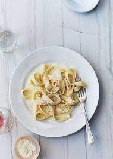

Fetuccine Alfredo

Receta de Fetuccine Alfredo
There are certain recipes that are essential to have in your recipe box and one of them has to be a phenomenal Fettuccine alfredo recipe. Years ago, when I was teaching kids' cooking classes, this was one of the first things I taught them. Almost every single kid around goes crazy for alfredo sauce! It is so easy to make a homemade alfredo sauce that you will never buy the jarred variety again!
Ingredientes
- 1 pound sweet Italian sausage
- ¾ pound lean ground beef
- ½ cup minced onion
- 2 cloves garlic, crushed
- 1 (28 ounce) can crushed tomatoes
- 2 (6 ounce) cans tomato paste
Pasos
Paso 1
- In a Dutch oven, cook sausage, ground beef, onion, and garlic over medium heat until well browned. Stir in crushed tomatoes, tomato paste, tomato sauce, and water. Season with sugar, basil, fennel seeds, Italian seasoning, 1 teaspoon salt, pepper, and 2 tablespoons parsley. Simmer, covered, for about 1 1/2 hours, stirring occasionally.
Paso 2
- Bring a large pot of lightly salted water to a boil. Cook lasagna noodles in boiling water for 8 to 10 minutes. Drain noodles, and rinse with cold water. In a mixing bowl, combine ricotta cheese with egg, remaining parsley, and 1/2 teaspoon salt.
Paso 3
- Preheat oven to 375 degrees F (190 degrees C).
Paso 4
- To assemble, spread 1 1/2 cups of meat sauce in the bottom of a 9x13-inch baking dish. Arrange 6 noodles lengthwise over meat sauce. Spread with one half of the ricotta cheese mixture. Top with a third of mozzarella cheese slices. Spoon 1 1/2 cups meat sauce over mozzarella, and sprinkle with 1/4 cup Parmesan cheese. Repeat layers, and top with remaining mozzarella and Parmesan cheese. Cover with foil: to prevent sticking, either spray foil with cooking spray, or make sure the foil does not touch the cheese.
Paso 5
- Bake in preheated oven for 25 minutes. Remove foil, and bake an additional 25 minutes. Cool for 15 minutes before serving.